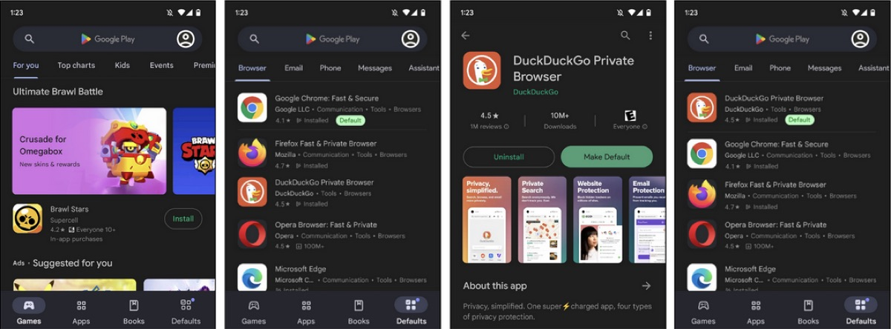
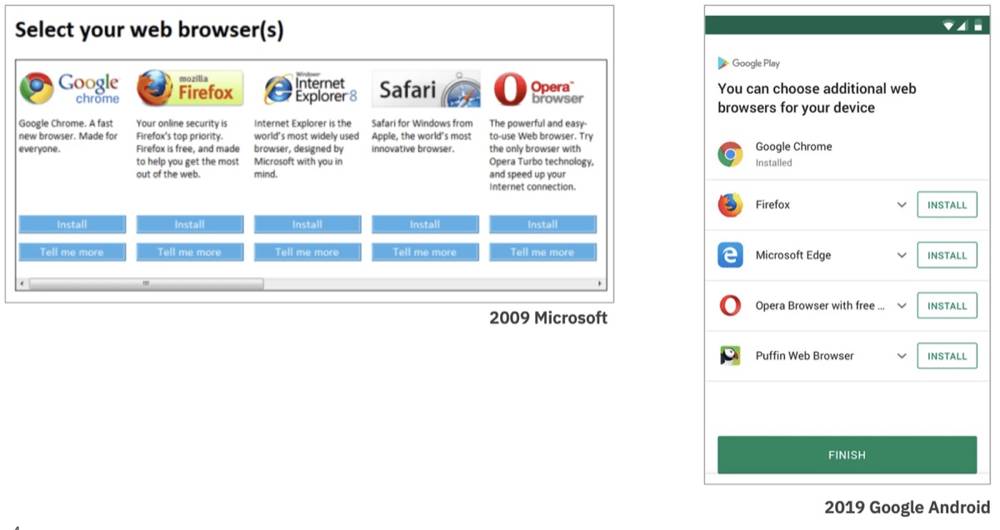
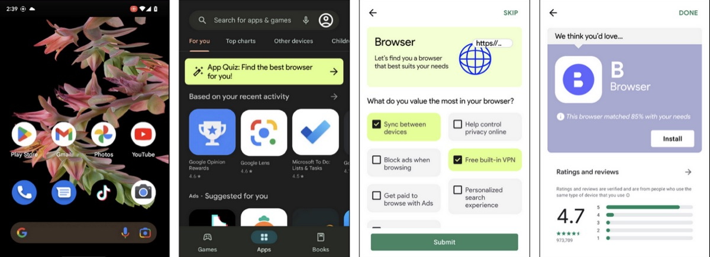
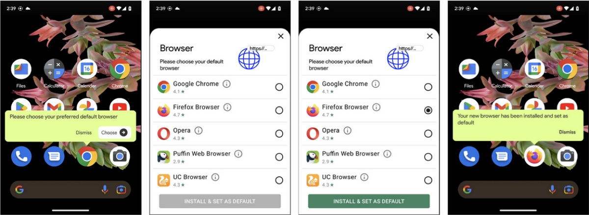
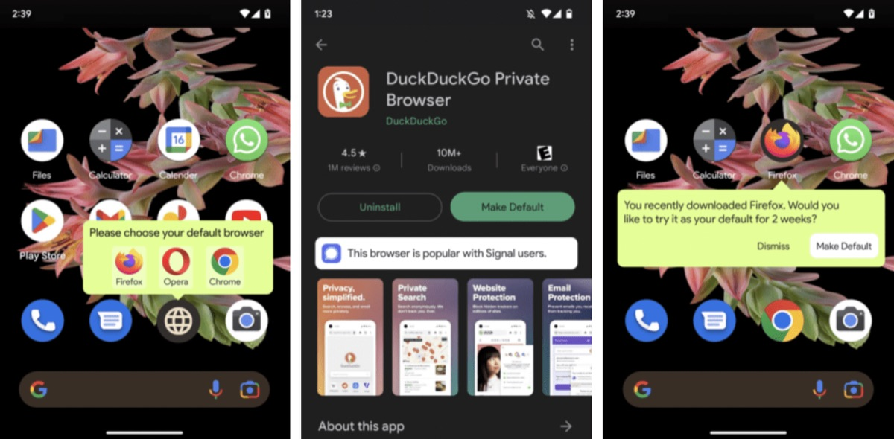

Beyond Choice Screens: Exploring Browser Choice Design Interventions

Design Concept: App Store Defaults
A handful of powerful companies use their control of operating systems to push their own products, including browsers. This self-preferencing behavior ultimately hampers competition by making it difficult for new, potentially better, products to enter and grow in the market. Browser choice screens enable people to actively choose their preferred browser. They are an important step in leveling the playing field for browser competition and will be required by the EU’s Digital Markets Act. However, they are unlikely to effectively remedy years of operating system self-preferencing behavior on their own.
In an effort to explore browser choice interventions beyond choice screens, Mozilla conducted a series of design concept explorations focused on investigating better ways to connect people to the right browsers for them. We found that design choices can greatly impact people’s ability and desire to engage with browser choice interventions and we share a set of design principles based on this research that will be important for realizing the potential value of any browser choice market remedy.
Background
People should have control over their online experiences and be able to choose their own software, including using something different from what is pre-selected by the device manufacturer or operating system provider (referred to in this report as “incumbent”). Control over their software choices enables people to use something that best fits with their needs and preferences. Yet, platforms are often incentivized to provide differentiated or preferential treatment to their own products and services compared to competitors. This “self-preferencing” can harm consumers by limiting or frustrating their ability to make their own choices and ultimately hamper competition and deter new products from entering the market that might be higher quality, more innovative, or more privacy-preserving.
Practices by operating systems have made it increasingly difficult for consumers to choose independent browsers (i.e non-incumbents) and for those browsers to compete for global market share. Pre-installing their own browsers and setting them as default is a common example of self-preferencing that has clear advantages for platforms and shapes consumer behavior in a way that is difficult to shift.
These market concerns have captured the attention of regulators globally. New regulations like the EU’s Digital Markets Act (DMA), coming into force in early 2024, will impact browser competition in a number of different ways. For example, Article 6(3) of the DMA includes a specific provision to allow and enable people to easily change web browser defaults and to choose their web browser from a “list” (i.e. a choice screen), at the time of their “first use.” It remains to be seen precisely how and where this will be implemented.

These types of changes have also been considered by other regulators, including both the UK’s Competition and Markets Authority (CMA) and the Australian Competition and Consumer Commission (ACCC) in previous reports. This is not the first time that browser choice screens have been introduced. For example, they were presented (in a limited form) as part of previous competition cases against Microsoft in 2009 and Google in 2018. In our experience, such interventions have had very limited effect on consumer choice and competition. But that is not to say they couldn’t have some impact; the effectiveness of choice screens depends on how they are designed and presented. Mozilla has led a large-scale experiment into the effects of browser choice screens, which will be published shortly.
“It is time to inject fresh ideas into the established thinking on choice remedies and to consider further creative ways to engage with people to ensure they can meaningfully choose and control their software.”
While well-designed choice screens may be one tool which improves people’s ability to actively choose their browser, they are not the only possible intervention and are not likely to be effective on their own. Many of the barriers to browser competition remain familiar, however, the market dynamics, consumer behavior, and our understanding of deceptive design techniques have all evolved over the last decade. It is time to inject fresh ideas into the established thinking on choice remedies and to consider further creative ways to engage with people to ensure they can meaningfully choose and control their software. The research set out in this report demonstrates some initial design concepts meant to engage with consumers beyond browser choice screens.
Research
The goals of this research were to:
Establish a baseline understanding of how people may have experienced previous browser choice screens.
Gather in-depth feedback on different browser choice intervention concepts.
Gain insight into how design choices can impact people’s ability and desire to engage with browser choice interventions.
We created clickable prototypes of four mobile design concepts (including a version of the 2019 Android EU browser choice screen) and conducted a series of unmoderated remote interviews with recruited participants from Australia, France, and the United Kingdom. Each of the four concepts was tested with 27 participants, evenly distributed amongst these three countries, for a total of 108 interviews. All interviews took place in late 2022 and early 2023. Participant recruitment criteria included:
Android users
“Average” web expertise
Report primarily using Chrome or Samsung Internet (the pre-installed browsers on Android devices)
Range of age, gender, occupation — excluding people who work in technology
Participants were guided through a series of self-paced questions and tasks to assess four main topics for each design concept. These topics were assessed with both verbal responses as well as numeric ratings:
Comprehension: Is the concept easy for people to understand?
Usability: Is the concept easy for people to interact with?
Desirability: Is the concept perceived as supporting a relevant goal?
Engagement: Do people want to engage with this concept?
Results
Concept 1: Android Browser Choice Screen
Goal: Understand how people may have experienced the 2019 Android browser choice screen, which was a real browser choice intervention in the market. This effort did not appear to have a meaningful impact on consumer choice or competition — The CMA has stated that, “We do not consider that Google’s choice screens, as currently implemented, adequately empower users to make a choice about their browser default.”
Description: When people click on the Play Store, a browser choice screen pops-up, allowing people to choose “additional web browsers” or dismiss the pop-up using a large green “No Thanks” button along the bottom of the screen. Browser logos are displayed along with the browser name. A short description of each browser is available if people click a drop down arrow next to each browser. Google Chrome is placed at the top and is shown as already “installed.”
Outcomes: Participants understood what the Browser Choice Screen was asking them to do and found the prototype easy to use, but they didn’t think the Browser Choice Screen was very useful. The vast majority of participants said they would immediately dismiss the pop-up.
“If I saw that in real life I would click on “No Thanks.” It has nothing to do with my search, so I’ll close the page.” — French Participant
TIMING: The Browser Choice Screen is displayed when people are visiting the Play Store for another purpose. Interrupting people in the middle of an unrelated workflow leads to feelings of annoyance or frustration, not thoughtful consideration of alternative browser options.
NOTIFICATIONS: People have been conditioned to ignore or dismiss pop-up prompts. In fact, some participants automatically dismissed the pop-up even after being instructed not to do so during the interview.
INERTIA: When consumers see that Chrome is already installed, they question why they would need another browser. Pre-installation, suggesting people “can choose additional web browsers”, and not setting the selected browser as the default means this is not truly a “Browser Choice Screen,” but rather an “Additional Browser Choice Screen.”
INFORMED CHOICE: For those that did interact with the browser choice screen, most said they would need more information to be convinced to download a new browser.
Concept 2: Play Store Quiz

Goal: Explore how consumers would respond to a more personalized browser choice approach by offering a quiz based on different browser features.
Description: When people click on the Play Store, a green banner appears that says “App Quiz: Find the best browser for you.” When people click on the banner, they are taken to a single-question quiz asking “What do you value the most in your browser?” People can select multiple answers from a predefined list. Once they make their selections, people are matched with a fictional browser that best suits their needs.
Outcomes: Participants found the Play Store Quiz easy to understand and easy to use. Participants thought that the Play Store Quiz was moderately useful, though most reported that they would probably not click on the banner if they saw it while visiting the Play Store. However, after clicking on the banner (as instructed in the interview), nearly all participants said they would be curious enough to fill out the short quiz and be interested in the recommendation.
“I use Chrome. It suits me. But if there is a new or a different browser that would suit me better, I’d be very interested in seeing what that was.” — Australian Participant
TIMING: While this concept avoided annoying consumers with pop-ups, some people reported a low likelihood of engagement due to being in the middle of an unrelated workflow.
NOTIFICATIONS: Consumers have been conditioned to ignore banner ads. In fact, some participants did not initially notice the banner at all.
INFORMED CHOICE: Most people said they would engage with the quiz after seeing it and were thoughtful about their quiz responses. People appeared eager to see the recommendation. Though, some said they would need more information to be convinced to actually download a new browser.
Concept 3: “Hot Seat” Update

Goal: Explore a different way to present a version of the browser choice screen — as a home screen notification tied to the pre-installed, default browser.
Description: When people view their home screen, a notification asks people to “Please choose your preferred default browser.” People can “Dismiss” the notification or select “Choose.” Selecting “Choose” opens up an updated version of the browser choice screen (with star ratings, additional descriptive information, and no browsers flagged as already “installed”.) People are able to select the pre-installed default to continue using it or select a different browser. If people select a different browser, it is installed for them and replaces the browser in the “hot seat” with a confirmation message saying, “Your new browser has been installed and set as your default.” The previous default is still available on the device.
Outcomes: It was evident from our interviews that many participants did not understand the intended purpose of the concept. Some participants only engaged with the notification because they believed they needed to confirm their choice to continue using Chrome as default. Others thought this would only be relevant to people who already had more than one browser installed. In both of these cases, participants were not in the mindset to explore alternatives when they clicked through to the browser list.
“I would click choose because I do want Chrome to be my default browser. Because it is.” — United Kingdom Participant
TIMING & INERTIA: This concept did not appear to offer browser choice at an appropriate time. The notification was viewed more as a confirmation of the current default rather than a prompt to make an active browser choice, since at the time of the notification, the incumbent browser is already part of the home screen.
NOTIFICATIONS: People seemed to misinterpret this notification as something they needed to interact with in order to confirm their current default browser. Clarifying this misinterpretation would likely result in much lower engagement with this notification.
INFORMED CHOICE: While some people found the app ratings helpful, very few explored the browser descriptions. Many people said they would need more information to be convinced to download a new browser.
Concept 4: Play Store Defaults Tab

Goal: Explore how a dedicated “defaults” section of the Play Store might help people better understand defaults and enable them to explore alternatives.
Description: When people click on the Play Store, a new section appears in the bottom right labeled “Defaults” and is subtly flagged as new with a small dot. When people click into this new section, they see tabs for a variety of “essential” app categories (e.g. app types that are typically preinstalled by the manufacturer or the operating system, but where many alternatives are also available — browsers, email, phone, messages, etc). People see a list of apps in each category, allowing them to view their current defaults, explore alternatives, and set a new default directly from the app store.
Outcomes: Most people were not able to anticipate where the defaults tab would take them due to low comprehension of the term “defaults.” However, after clicking into the defaults section, nearly all participants immediately understood the purpose. Participants found the Play Store Defaults Tab easy to use and thought it was useful — with many participants commenting positively on the convenience and control this concept offered over the current methods for managing defaults.
“I found it useful to be able to go and automatically just set which apps you want to use as your default. Having that in one place, rather than having to … I don’t even know if you can set apps as your default through settings.” — Australian Participant
TIMING & NOTIFICATIONS: While most people did not immediately notice the new defaults tab, many said they would explore it once they did. This concept succeeds in avoiding consumer annoyance with pop-ups or workflow interruption, but possibly at the expense of lower or slower engagement. However, the ever-present nature of this tab could make this an asset by offering a way for people to easily control their defaults on their own timeline.
INERTIA: For those that are curious about other browsers, the effort and knowledge necessary to switch can be a barrier. This concept helps eliminate this barrier by enabling people to understand the concept of defaults and how to view and change them. Several people in our interviews mentioned that they didn’t know how to change their defaults or that it was difficult to do so using other methods.
Summary & Design Principles
#1 Timing
The timing of browser choice interventions can greatly influence people’s likelihood of engagement. Interrupting consumers in the middle of an unrelated workflow (e.g. when clicking on the Play Store) leads to feelings of annoyance and frustration, not thoughtful consideration of alternative browser options. Instead, we think it is valuable to consider ways to present choice interventions in contexts that better align with consumer expectations (e.g. perhaps during device set-up) and do not interrupt an in-process workflow (e.g. perhaps while searching for an alternative to an existing default browser).
Of the four concepts we tested, only the Defaults Tab concept appeared to be well-timed, since this was something people could explore on their own time.
#2 Notifications
The method in which people are asked to consider browser choice interventions can greatly influence their likelihood of engagement. Consumers have been conditioned to dismiss or ignore pop-up prompts and banners. The design of choice interventions should take this into account and look at better ways to encourage consideration and engagement.
Of the four concepts we tested, only the Defaults Tab concept appeared to succeed in avoiding consumer annoyance with pop-ups or low-visibility with banners. While people may be slow to notice this new Play Store section, the ever-present nature of this tab could be an asset by offering a way for people to easily control their defaults on their own timeline.
#3 Inertia
The inertia of pre-installed default browsers is a strong force to overcome. Consumers question why they would need another browser when choice interventions highlight the preset browser. Choice interventions should present browsers in a neutral manner, regardless of pre-installed status. Furthermore, they also need to overcome the inertia and habituation of pre-installation. Browser choice interventions should make it easy for consumers to explore alternatives and manage defaults beyond a single browser choice intervention moment. This underscores the possibility that two or more interventions could be applied together to maximize user choice (for example, a well-designed Browser Choice Screen and a Defaults Tab combines a one-off remedy with an easily accessible route to change settings and explore new options).
Of the four concepts we tested, the Play Store Quiz and the Defaults Tab concepts seemed to help people consider options beyond incumbent browsers. The Play Store Quiz enticed people to consider what they value in a browser and made them curious to learn about options that might better suit their needs. The Defaults Tab concept allowed people to better understand defaults, explore their options, and manage their choices.
#4 Informed Choice
Browser choice interventions should enable people to make an informed choice by helping them understand what a default is, why they might want to explore alternative browsers, and providing ways for consumers to differentiate between options so they can be matched to the browser that is best suited to their needs.
Of the four concepts tested, the Play Store Quiz and Defaults Tab concepts appeared to support informed choice. The Play Store Quiz allowed people to explore browser options that met criteria they cared about (though, some noted they would probably seek out more information about the suggestions before deciding to download them). The Defaults Tab concept, by virtue of being situated within the primary Play Store app navigation, allows a large amount of information to be presented to people in a familiar format.
Conclusion
This research shows that design choices can greatly impact people’s ability and desire to engage with browser choice interventions. It also suggests that relying on a single browser choice intervention moment is unlikely to actually support real consumer choice. It is important that the organizations tasked with designing and regulating current and future interventions (including browser choice screens) are mindful of the design principles we have articulated with this research, so as not to undermine the potential value of these kinds of market remedies. Ideally, we would like to see multiple carefully selected browser choice interventions used in conjunction — for example, a choice screen when people update their device or get a new one, a fun and personal way to re-engage people like a quiz, and an easy way for people to understand and manage their defaults at any time through something like an app store defaults tab. In addition, clear and easily accessible default settings should always be available on the operating system.
Due to time and resource constraints, we were only able to test Android prototypes but we expect the findings to be generally applicable to iOS. It should also be noted that we only tested a small number of the range of concept ideas that we came up with, but we hope this research has helped to demonstrate that there are options worth exploring beyond (or in addition to) browser choice screens — and we’d welcome any other innovative ideas on how to best engage people!

Additional Concept Ideas
Gemma Petrie is Principal Researcher at Mozilla, where she leads research on browser choice and competition. For more information on Mozilla's browser competition research, visit https://research.mozilla.org/browser-competition.
Thank you to Aarjav Pandya for prototyping these design concepts!
See, for example, the Digital Markets Act, recital 49.
Presenting search app and browser options to Android users in Europe, Google (2019)
Mobile Ecosystems Market Study: Appendix G – pre-installation, default settings and choice architecture for mobile browsers, Competition and Markets Authority (2022)